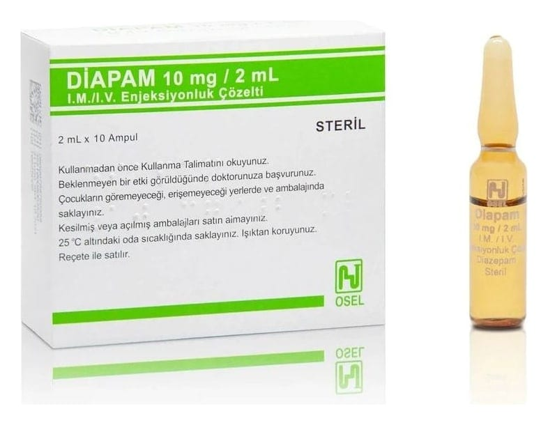

Diapam 10 mg/2 ml IM/IV Enjeksiyonluk Çözelti, 10 Ampul

Ne için kullanılır
KT · Bölüm 1DİAPAM’in etkin maddesi benzodiyazepinler adı verilen bir ilaç grubuna dahil olan diazepamdır. Uykuya dalmanıza neden olabilir ve sakinleştirici bir etkisi de olabilir. Her bir ampul 2 mL’sinde 10 mg etkin madde içermektedir. DİAPAM, 2 mL’lik 10, 50 veya 100 adet ampul, bir adet kullanma talimatı ile birlikte karton kutularda sunulmaktadır. Diazepam bir damara enjeksiyon yoluyla (intravenöz olarak), bir Bu ilacı kullanmaya başlamadan önce bu KULLANMA TALİMATINI dikkatlice okuyunuz, çünkü sizin için önemli bilgiler içermektedir. • Bu kullanma talimatını saklayınız. Daha sonra tekrar okumaya ihtiyaç duyabilirsiniz. • Eğer ilave sorularınız olursa, lütfen doktorunuza veya eczacınıza danışınız. • Bu ilaç kişisel olarak sizin için reçete edilmiştir, başkalarına vermeyiniz. • Bu ilacın kullanımı sırasında, doktora veya hastaneye gittiğinizde doktorunuza bu ilacı kullandığınızı söyleyiniz. • Bu talimatta yazılanlara aynen uyunuz. İlaç hakkında size önerilen dozun dışında yüksek veya düşük doz kullanmayınız.
damla (infüzyon) veya bir kas içine enjeksiyon yoluyla (kas içine) verilebilir. DİAPAM aşağıdaki durumların tedavisinde kullanılmaktadır: • Yetişkinlerde ve çocuklarda tetkikler ve tedavi sırasında (diş hekimliğinde, cerrahide, radyolojide yardımcı olarak) sedasyon (uyku hali) için, • Tedaviden önce hastaları sakinleştirmek ve yoğun bakım ünitelerindeki hastaları yatıştırmak için premedikasyon olarak, • Anksiyetenin (endişe, kaygı) kısa süreli tedavisinde, • Alkolü bırakan hastalarda oluşan belirtiler (huzursuzluk, titreme, hayal görme, huzursuzluk-taşkınlık, hezeyan gibi belirti gösteren ani geçici bilinç bozukluğu), • Kasların gevşemesine yardımcı olmak ve kas kasılmaları ile serebral inme için (beyni etkileyen ve hareket sorunlarına ve kas sertliğine neden olan bir koşul), • Ateşli havale (febril konvülsiyon) durumlarında, • Kesintisiz sara nöbetleri (status epileptikus) dahil ani gelişen kas kasılmaları, ayrıca zehirlenmeye bağlı kasılmalarda, • Tetanozdaki gibi ağrılı kas kasılmalarının ilerleyici bir türünü tedavi etmek için.